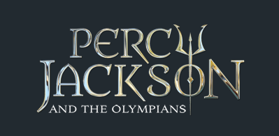
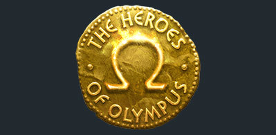
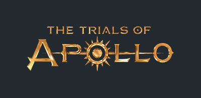

Percy Jackson and the Olympians
The Percy Jackson and the Olympians series follows the adventures of Percy Jackson, a 12-year-old boy who
discovers he is a demigod, the son of Poseidon, and embarks on a series of quests to save the world of gods
and mortals. Along with his demigod companions,Percy navigates the dangerous world of Greek mythology,
battling monsters and gods alike. At the end of the series, the now 16 year old Percy, clashes against the titan
Kronos, who seeks to overthrow the Olypmians and rule earth.
The Heroes of Olympus
The Heroes of Olympus is set in the same universe as the Percy Jackson and the Olympians series. The series
follows a new cast of characters, which now include those from Roman mythology, as they embark on a quest to stop the
rise of the Earth goddess Gaea, who also wants to overthrow the olympians. The series introduces new heroes such as Jason
Grace, son of Jupiter, Piper McLean, daughter of Aphrodite, and Leo Valdez, son of Hephaestus,
as well as fan-favorite characters from the original series. The series also explores the relationship between
the Greek and Roman gods and their respective demigod children, and delves deeper into the world of mythological monsters
and magical powers.
The Trials of Apollo
The Trials of Apollo is a sequal to the previous two series. The series follows the god Apollo, who
has been stripped of his godly powers by Zeus and banished to Earth in the form of a mortal teenage boy named
Lester Papadopoulos. In order to regain his godhood, Apollo must embark on a series of dangerous quests,
accompanied by his demigod master, Meg McCaffrey. This time, 3 vicious Roman emperorers rise from the dead
and yet again try to overthrow the Olypmians.


